CODING AGENTS AS PIXEL WORLD MODELS
traex/GPT-5.6-Sol · common50_0041
点击播放 · 原生 RGB 像素
逐轮保存的候选
回放视频、检查图与代码变化。
每份候选均可单独播放。实际图片检查记录在下方工具轨迹中。
候选 01播放与检查图
点击播放 · 原生 RGB 像素
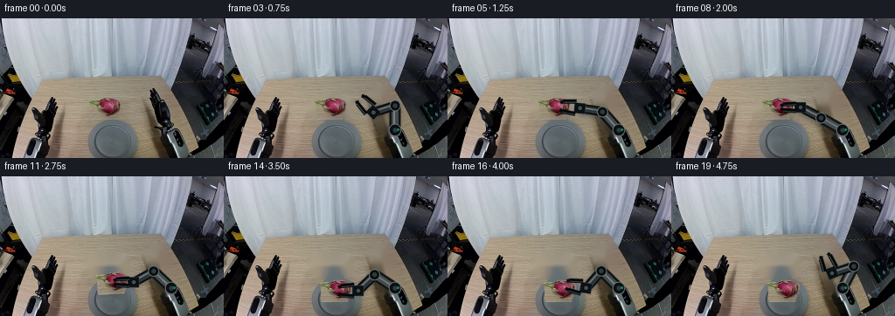
展开代码变化
--- 上一保存版本
+++ 本次保存版本
@@ -0,0 +1,206 @@
+from pathlib import Path
+import math
+import cv2
+import numpy as np
+from PIL import Image, ImageDraw, ImageFilter
+import artifact_io
+
+CASE_DIR = Path(__file__).resolve().parent
+W, H = 256, 160
+S = 4 # antialiasing scale for synthetic rigid geometry
+
+
+def smoothstep(t):
+ t = max(0.0, min(1.0, float(t)))
+ return t*t*(3.0-2.0*t)
+
+
+def lerp(a, b, t):
+ t = smoothstep(t)
+ return (a[0] + (b[0]-a[0])*t, a[1] + (b[1]-a[1])*t)
+
+
+def make_clean_background(rgb):
+ """Remove only the fruit and the moving distal part of the right robot."""
+ bgr = cv2.cvtColor(rgb, cv2.COLOR_RGB2BGR)
+ mask = np.zeros((H, W), np.uint8)
+ # Fruit plus its small contact shadow.
+ cv2.ellipse(mask, (122, 102), (27, 15), 0, 0, 360, 255, -1)
+ # Existing right gripper/forearm. The silver fixed base below is retained.
+ poly = np.array([[170,77], [187,78], [194,101], [197,124],
+ [190,137], [177,128], [170,108]], np.int32)
+ cv2.fillPoly(mask, [poly], 255)
+ mask = cv2.dilate(mask, np.ones((3,3),np.uint8), iterations=1)
+ clean = cv2.inpaint(bgr, mask, 4, cv2.INPAINT_TELEA)
+ return cv2.cvtColor(clean, cv2.COLOR_BGR2RGB)
+
+
+def extract_fruit(rgb):
+ """GrabCut the original dragon fruit into a rigid RGBA sprite."""
+ bgr = cv2.cvtColor(rgb, cv2.COLOR_RGB2BGR)
+ gc = np.zeros((H, W), np.uint8)
+ gc[89:116, 92:148] = cv2.GC_PR_BGD
+ y, x = np.indices((H,W))
+ r, g, b = rgb[...,0], rgb[...,1], rgb[...,2]
+ pink = (r > 70) & (r > g*1.10) & (r > b*1.08) & (x>102)&(x<145)&(y>88)&(y<115)
+ stem = (g>52)&(g>b*1.20)&(x>94)&(x<119)&(y>91)&(y<107)
+ gc[pink | stem] = cv2.GC_FGD
+ gc[(y<89)|(y>=116)|(x<92)|(x>=148)] = cv2.GC_BGD
+ bgd = np.zeros((1,65), np.float64)
+ fgd = np.zeros((1,65), np.float64)
+ cv2.grabCut(bgr, gc, None, bgd, fgd, 7, cv2.GC_INIT_WITH_MASK)
+ alpha = np.where((gc==cv2.GC_FGD)|(gc==cv2.GC_PR_FGD),255,0).astype(np.uint8)
+ # Keep the one connected component at the fruit center.
+ n, labels, stats, _ = cv2.connectedComponentsWithStats(alpha)
+ lab = labels[101,123]
+ if lab == 0 and n > 1:
+ lab = 1 + np.argmax(stats[1:,cv2.CC_STAT_AREA])
+ alpha = np.where(labels==lab,255,0).astype(np.uint8)
+ alpha = cv2.GaussianBlur(alpha,(3,3),0.45)
+ box = (92, 88, 149, 117)
+ rgba = np.dstack([rgb,alpha])[box[1]:box[3],box[0]:box[2]].copy()
+ # visual center of extracted sprite in full image coordinates
+ return Image.fromarray(rgba, 'RGBA'), (123.0-box[0], 102.0-box[1])
+
+
+def unit(v):
+ d = math.hypot(v[0],v[1]) or 1.0
+ return (v[0]/d,v[1]/d)
+
+
+def two_link_elbow(base, palm, bend=1.0):
+ """Fixed-length 28/26 px inverse kinematics, preserving rigid links."""
+ L1,L2 = 28.0,26.0
+ vx,vy = palm[0]-base[0],palm[1]-base[1]
+ d = max(abs(L1-L2)+.01, min(L1+L2-.01, math.hypot(vx,vy)))
+ ux,uy = vx/d,vy/d
+ a = (L1*L1-L2*L2+d*d)/(2*d)
+ h = math.sqrt(max(0.0,L1*L1-a*a))
+ # This branch keeps the elbow low/right, away from the workpiece.
+ return (base[0]+a*ux-h*uy*bend, base[1]+a*uy+h*ux*bend)
+
+
+def sp(p): return (int(round(p[0]*S)), int(round(p[1]*S)))
+
+
+def polygon_around(a,b,width):
+ u=unit((b[0]-a[0],b[1]-a[1])); n=(-u[1],u[0]); q=width/2
+ return [sp((a[0]+n[0]*q,a[1]+n[1]*q)), sp((b[0]+n[0]*q,b[1]+n[1]*q)),
+ sp((b[0]-n[0]*q,b[1]-n[1]*q)), sp((a[0]-n[0]*q,a[1]-n[1]*q))]
+
+
+def draw_robot(frame, palm, direction, opening, engaged=False):
+ """Overlay a stable, articulated two-link industrial arm and parallel gripper."""
+ base=(196.0,128.0)
+ elbow=two_link_elbow(base,palm,1.0)
+ # transparent high-res layers: one shadow and one rigid robot
+ sh=Image.new('RGBA',(W*S,H*S),(0,0,0,0)); sd=ImageDraw.Draw(sh)
+ # Shadows projected slightly down-left onto table
+ off=(-2.0,3.0)
+ ba=(base[0]+off[0],base[1]+off[1]); ea=(elbow[0]+off[0],elbow[1]+off[1]); pa=(palm[0]+off[0],palm[1]+off[1])
+ sd.line([sp(ba),sp(ea)],fill=(25,27,27,80),width=13*S)
+ sd.line([sp(ea),sp(pa)],fill=(20,22,22,75),width=11*S)
+ sh=sh.filter(ImageFilter.GaussianBlur(2.2*S))
+
+ ov=Image.new('RGBA',(W*S,H*S),(0,0,0,0)); d=ImageDraw.Draw(ov)
+ # rear upper link: graphite housing with silver center face
+ d.line([sp(base),sp(elbow)], fill=(16,20,22,255), width=13*S)
+ d.line([sp(base),sp(elbow)], fill=(66,75,78,255), width=8*S)
+ d.line([sp((base[0]-1,base[1]-1)),sp((elbow[0]-1,elbow[1]-1))], fill=(142,150,150,150), width=2*S)
+ # forearm: dark, rigid and slightly slimmer
+ d.line([sp(elbow),sp(palm)], fill=(10,14,17,255), width=11*S)
+ d.line([sp(elbow),sp(palm)], fill=(43,52,57,255), width=7*S)
+ d.line([sp((elbow[0]-1,elbow[1]-1)),sp((palm[0]-1,palm[1]-1))], fill=(105,119,123,180), width=2*S)
+ # Circular revolute joints
+ for c,rad in [(base,7.2),(elbow,6.3)]:
+ d.ellipse([int((c[0]-rad)*S),int((c[1]-rad)*S),int((c[0]+rad)*S),int((c[1]+rad)*S)],fill=(12,16,18,255),outline=(102,111,112,255),width=S)
+ d.ellipse([int((c[0]-2.5)*S),int((c[1]-2.5)*S),int((c[0]+2.5)*S),int((c[1]+2.5)*S)],fill=(48,58,60,255))
+ # Palm aligned with gripper direction.
+ u=unit(direction); n=(-u[1],u[0])
+ back=(palm[0]-u[0]*6,palm[1]-u[1]*6); front=(palm[0]+u[0]*7,palm[1]+u[1]*7)
+ d.polygon(polygon_around(back,front,12),fill=(12,17,20,255),outline=(95,106,108,255))
+ # central hinge cap
+ d.ellipse([int((palm[0]-3.2)*S),int((palm[1]-3.2)*S),int((palm[0]+3.2)*S),int((palm[1]+3.2)*S)],fill=(66,77,80,255),outline=(8,11,13,255),width=S)
+ # Two fingers; each is a rigid tapered jaw. Opening is half-separation.
+ finger_start=5.0; finger_len=20.0
+ for side in (-1,1):
+ sep=opening*side
+ a=(palm[0]+u[0]*finger_start+n[0]*sep,palm[1]+u[1]*finger_start+n[1]*sep)
+ b=(palm[0]+u[0]*finger_len+n[0]*sep*.78,palm[1]+u[1]*finger_len+n[1]*sep*.78)
+ # modest inward hooked tip
+ c=(b[0]+u[0]*3.0-n[0]*side*1.7,b[1]+u[1]*3.0-n[1]*side*1.7)
+ d.line([sp(a),sp(b)],fill=(5,8,10,255),width=5*S)
+ d.line([sp((a[0]-n[0],a[1]-n[1])),sp((b[0]-n[0],b[1]-n[1]))],fill=(65,76,80,255),width=S)
+ d.line([sp(b),sp(c)],fill=(7,10,12,255),width=4*S)
+ # small green status LED at fixed shoulder coupling
+ d.ellipse([int(198*S),int(126*S),int(201*S),int(129*S)],fill=(24,127,88,230))
+ sh=sh.resize((W,H),Image.Resampling.LANCZOS)
+ ov=ov.resize((W,H),Image.Resampling.LANCZOS)
+ out=Image.alpha_composite(Image.fromarray(frame).convert('RGBA'),sh)
+ out=Image.alpha_composite(out,ov)
+ return np.array(out.convert('RGB'))
+
+
+def paste_fruit(frame, sprite, anchor, center, angle=0.0, elevated=False):
+ im=Image.fromarray(frame).convert('RGBA')
+ # A detached soft shadow conveys lift; on placement it tightens beneath the fruit.
+ shadow=Image.new('RGBA',(W,H),(0,0,0,0)); ds=ImageDraw.Draw(shadow)
+ sx,sy=center
+ if elevated:
+ ds.ellipse((sx-16,sy+7,sx+15,sy+14),fill=(27,25,21,45))
+ shadow=shadow.filter(ImageFilter.GaussianBlur(4))
+ im=Image.alpha_composite(im,shadow)
+ rot=sprite.rotate(angle,resample=Image.Resampling.BICUBIC,expand=True)
+ # rotation expansion shifts nominal anchor; center placement is more stable.
+ x=int(round(center[0]-rot.width/2)); y=int(round(center[1]-rot.height/2))
+ im.alpha_composite(rot,(x,y))
+ return np.array(im.convert('RGB'))
+
+
+def state(i):
+ original=(123.0,102.0); dest=(129.0,131.0)
+ start_p=(184.0,111.0); start_d=(-0.38,-0.925)
+ approach_p=(148.0,102.0); work_d=(-1.0,0.0)
+ if 1 <= i <= 6:
+ t=(i-1)/5
+ palm=lerp(start_p,approach_p,t)
+ d=unit(lerp(start_d,work_d,t))
+ fruit=original; opening=7.2; held=False; elevated=False; angle=0
+ elif i==7:
+ palm=approach_p; d=work_d; fruit=original; opening=4.2; held=True; elevated=False; angle=0
+ elif 8 <= i <= 12:
+ t=(i-8)/4
+ e=smoothstep(t)
+ fruit=(original[0]+(dest[0]-original[0])*e,
+ original[1]+(dest[1]-original[1])*e-11*math.sin(math.pi*e))
+ palm=(fruit[0]+25,fruit[1]); d=work_d; opening=4.2; held=True; elevated=True; angle=6*math.sin(math.pi*e)
+ elif i==13:
+ fruit=dest; palm=(154,131); d=work_d; opening=4.2; held=True; elevated=False; angle=0
+ elif i==14:
+ fruit=dest; palm=(154,131); d=work_d; opening=6.8; held=False; elevated=False; angle=0
+ else:
+ t=(i-15)/4
+ fruit=dest; palm=lerp((154,131),start_p,t); d=unit(lerp(work_d,start_d,t)); opening=7.2; held=False; elevated=False; angle=0
+ return palm,d,opening,fruit,held,elevated,angle
+
+
+def generate():
+ first=np.array(Image.open(CASE_DIR/'first_frame.png').convert('RGB'),dtype=np.uint8)
+ clean=make_clean_background(first)
+ sprite,anchor=extract_fruit(first)
+ frames=[first.copy()]
+ for i in range(1,20):
+ palm,direction,opening,fruit,held,elevated,angle=state(i)
+ fr=clean.copy()
+ # Fruit is laid down before gripper, allowing fingers to visibly clasp it.
+ fr=paste_fruit(fr,sprite,anchor,fruit,angle,elevated)
+ fr=draw_robot(fr,palm,direction,opening,held)
+ frames.append(fr)
+ frames=np.stack(frames).astype(np.uint8)
+ assert frames.shape==(20,160,256,3)
+ assert np.array_equal(frames[0],first)
+ artifact_io.save(frames,CASE_DIR)
+ return frames
+
+if __name__=='__main__':
+ generate()
候选 02播放与检查图
点击播放 · 原生 RGB 像素

展开代码变化
--- 上一保存版本
+++ 本次保存版本
@@ -32,7 +32,30 @@
cv2.fillPoly(mask, [poly], 255)
mask = cv2.dilate(mask, np.ones((3,3),np.uint8), iterations=1)
clean = cv2.inpaint(bgr, mask, 4, cv2.INPAINT_TELEA)
- return cv2.cvtColor(clean, cv2.COLOR_BGR2RGB)
+ clean = cv2.cvtColor(clean, cv2.COLOR_BGR2RGB)
+ # Inpainting a long arm from one side can leave a vertical smear. Rebuild the
+ # masked tabletop from a nearby clean horizontal strip; its wood grain is
+ # predominantly horizontal, so row-wise interpolation is visually faithful.
+ table_mask = mask.astype(np.float32) / 255.0
+ for yy in range(75, 139):
+ xs = np.flatnonzero(mask[yy] > 0)
+ if not len(xs):
+ continue
+ x0, x1 = max(35, xs.min()-2), min(207, xs.max()+3)
+ left = max(35, x0-7); right = min(207, x1+7)
+ c0 = rgb[yy, left].astype(float); c1 = rgb[yy, right].astype(float)
+ for xx in range(x0, x1+1):
+ if mask[yy,xx]:
+ q = (xx-x0)/max(1,x1-x0)
+ basec = c0*(1-q)+c1*q
+ # preserve subtle natural grain using the unobstructed row above
+ grain_y = max(70, yy-18)
+ local = rgb[grain_y, min(207,xx)].astype(float)
+ local_mean = rgb[grain_y, max(35,xx-4):min(208,xx+5)].mean(axis=0)
+ clean[yy,xx] = np.clip(basec + .35*(local-local_mean),0,255)
+ # feather just the edited boundary, not the static scene
+ soft = cv2.GaussianBlur(mask,(5,5),1.0)[...,None]/255.0
+ return np.clip(clean*soft + rgb*(1-soft),0,255).astype(np.uint8)
def extract_fruit(rgb):
@@ -60,7 +83,7 @@
box = (92, 88, 149, 117)
rgba = np.dstack([rgb,alpha])[box[1]:box[3],box[0]:box[2]].copy()
# visual center of extracted sprite in full image coordinates
- return Image.fromarray(rgba, 'RGBA'), (123.0-box[0], 102.0-box[1])
+ return Image.fromarray(rgba), (123.0-box[0], 102.0-box[1])
def unit(v):
候选 03播放与检查图

候选 04播放与检查图
点击播放 · 原生 RGB 像素
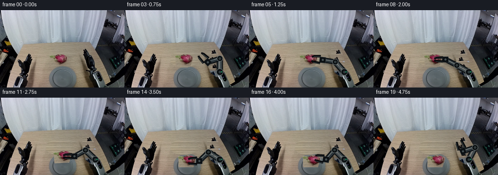
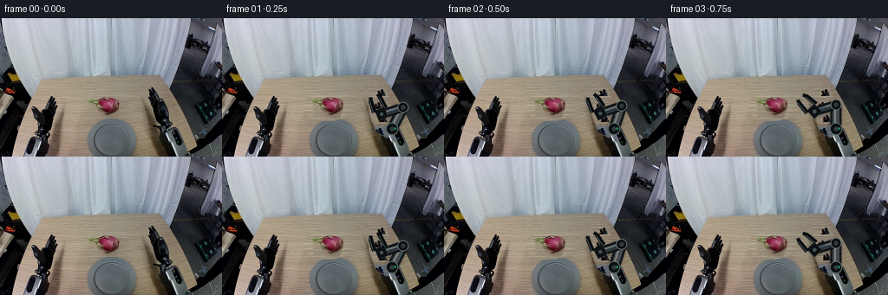
展开代码变化
--- 上一保存版本
+++ 本次保存版本
@@ -31,31 +31,24 @@
[190,137], [177,128], [170,108]], np.int32)
cv2.fillPoly(mask, [poly], 255)
mask = cv2.dilate(mask, np.ones((3,3),np.uint8), iterations=1)
- clean = cv2.inpaint(bgr, mask, 4, cv2.INPAINT_TELEA)
- clean = cv2.cvtColor(clean, cv2.COLOR_BGR2RGB)
- # Inpainting a long arm from one side can leave a vertical smear. Rebuild the
- # masked tabletop from a nearby clean horizontal strip; its wood grain is
- # predominantly horizontal, so row-wise interpolation is visually faithful.
- table_mask = mask.astype(np.float32) / 255.0
- for yy in range(75, 139):
+ clean = cv2.cvtColor(cv2.inpaint(bgr, mask, 4, cv2.INPAINT_TELEA), cv2.COLOR_BGR2RGB)
+ # Inpainting a long arm from one side can smear. Synthesize the masked wood
+ # from clean rows above, shifted so repeated knots do not become obvious.
+ synth = clean.copy()
+ for yy in range(75, 140):
xs = np.flatnonzero(mask[yy] > 0)
- if not len(xs):
- continue
- x0, x1 = max(35, xs.min()-2), min(207, xs.max()+3)
- left = max(35, x0-7); right = min(207, x1+7)
- c0 = rgb[yy, left].astype(float); c1 = rgb[yy, right].astype(float)
- for xx in range(x0, x1+1):
- if mask[yy,xx]:
- q = (xx-x0)/max(1,x1-x0)
- basec = c0*(1-q)+c1*q
- # preserve subtle natural grain using the unobstructed row above
- grain_y = max(70, yy-18)
- local = rgb[grain_y, min(207,xx)].astype(float)
- local_mean = rgb[grain_y, max(35,xx-4):min(208,xx+5)].mean(axis=0)
- clean[yy,xx] = np.clip(basec + .35*(local-local_mean),0,255)
- # feather just the edited boundary, not the static scene
- soft = cv2.GaussianBlur(mask,(5,5),1.0)[...,None]/255.0
- return np.clip(clean*soft + rgb*(1-soft),0,255).astype(np.uint8)
+ for xx in xs:
+ # The tabletop's perspective texture is strongly horizontal.
+ src_y = 73 + ((yy - 75) % 15)
+ src_x = min(207, max(37, xx - 11 + ((yy // 4) % 9)))
+ sample = rgb[src_y, src_x].astype(float)
+ # Match the slow vertical illumination gradient of adjacent wood.
+ ref_now = rgb[yy, 150].astype(float)
+ ref_src = rgb[src_y, 150].astype(float)
+ synth[yy, xx] = np.clip(sample + ref_now - ref_src, 0, 255)
+ # Feather the patch boundary while retaining the undisturbed static scene.
+ soft = cv2.GaussianBlur(mask,(7,7),1.4)[...,None]/255.0
+ return np.clip(synth*soft + rgb*(1-soft),0,255).astype(np.uint8)
def extract_fruit(rgb):
候选 05播放与检查图
点击播放 · 原生 RGB 像素
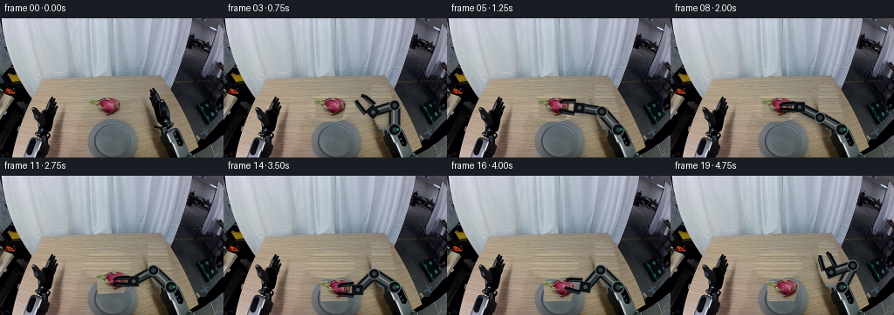
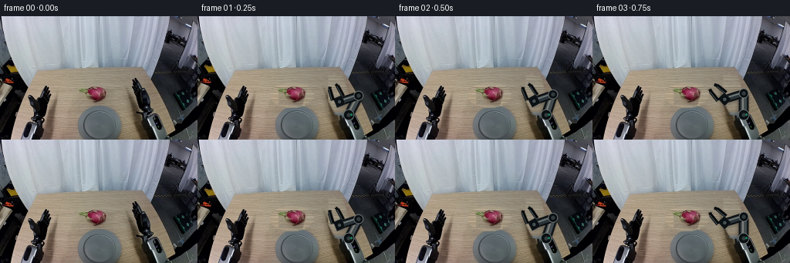
展开代码变化
--- 上一保存版本
+++ 本次保存版本
@@ -24,11 +24,11 @@
"""Remove only the fruit and the moving distal part of the right robot."""
bgr = cv2.cvtColor(rgb, cv2.COLOR_RGB2BGR)
mask = np.zeros((H, W), np.uint8)
- # Fruit plus its small contact shadow.
+ # Existing fruit, contact shadow, and right moving arm. Limit edits to the
+ # wooden tabletop; the fixed silver base and black border remain untouched.
cv2.ellipse(mask, (122, 102), (27, 15), 0, 0, 360, 255, -1)
- # Existing right gripper/forearm. The silver fixed base below is retained.
poly = np.array([[170,77], [187,78], [194,101], [197,124],
- [190,137], [177,128], [170,108]], np.int32)
+ [190,128], [179,126], [170,108]], np.int32)
cv2.fillPoly(mask, [poly], 255)
mask = cv2.dilate(mask, np.ones((3,3),np.uint8), iterations=1)
clean = cv2.cvtColor(cv2.inpaint(bgr, mask, 4, cv2.INPAINT_TELEA), cv2.COLOR_BGR2RGB)
@@ -40,7 +40,8 @@
for xx in xs:
# The tabletop's perspective texture is strongly horizontal.
src_y = 73 + ((yy - 75) % 15)
- src_x = min(207, max(37, xx - 11 + ((yy // 4) % 9)))
+ # Sample centrally, never from the original gripper at xâ180.
+ src_x = min(163, max(70, xx - 36 + ((yy // 4) % 9)))
sample = rgb[src_y, src_x].astype(float)
# Match the slow vertical illumination gradient of adjacent wood.
ref_now = rgb[yy, 150].astype(float)
可观测工具轨迹
实际执行的命令与返回图片。
命令 1exit 0
/bin/bash -lc "cat prompt.txt && printf '\\n---RULES---\\n' && cat GENERATION_RULES.md"
命令 2exit 1
/bin/bash -lc "find . -maxdepth 2 -type f -printf '%p\\n' | sort && printf '\\nTools:\\n' && command -v ffmpeg && command -v python3 && python3 - <<'PY'
try:
import cv2; print('cv2',cv2.__version__)
except Exception as e: print('no cv2',e)
try:
import PIL; print('PIL',PIL.__version__)
except Exception as e: print('no pil',e)
PY"命令 3exit 0
/bin/bash -lc "cat task_spec.json; sed -n '1,240p' artifact_io.py"
命令 4exit 0
/bin/bash -lc "python3 - <<'PY' mods=['numpy','PIL','cv2','imageio','scipy'] for m in mods: try: x=__import__(m); print(m, getattr(x,'__version__','ok')) except Exception as e: print(m,'NO',e) PY for x in ffmpeg convert magick; do command -v \""'$x" || true; done'
命令 5exit 0
/bin/bash -lc "python3 - <<'PY'
from PIL import Image
im=Image.open('first_frame.png')
for name,box in [('fruit',(90,75,155,120)),('right',(160,70,225,160)),('left',(20,75,80,160)),('plate',(90,105,170,160))]:
im.crop(box).resize(((box[2]-box[0])*5,(box[3]-box[1])*5)).save(name+'.png')
PY"命令 6exit 2
/bin/bash -lc "cat > /tmp/testmask.py <<'PY'
import cv2,numpy as np
from PIL import Image
im=cv2.imread('first_frame.png')
mask=np.zeros(im.shape[:2],np.uint8)
mask[89:114,94:146]=cv2.GC_PR_BGD
# definite FG color pink/green dark object
rgb=im[:,:,::-1]; r,g,b=[rgb[:,:,i] for i in range(3)]
fg=((r>70)&(r>g*1.12)&(r>b*1.12)) | ((g>55)&(g>r*0.8)&(g>b*1.25)&(np.indices(g.shape)[1]<119)&(np.indices(g.shape)[0]>91)&(np.indices(g.shape)[0]<106))
mask[fg]=cv2.GC_FGD
bg=((np.indices(g.shape)[0]<89)|(np.indices(g.shape)[0]>=114)|(np.indices(g.shape)[1]<94)|(np.indices(g.shape)[1]>=146))
mask[bg]=cv2.GC_BGD
bgd=np.zeros((1,65),np.float64); fgd=np.zeros((1,65),np.float64)
cv2.grabCut(im,mask,None,bgd,fgd,6,cv2.GC_INIT_WITH_MASK)
a=np.where((mask==1)|(mask==3),255,0).astype(np.uint8)
# retain comp around center plus stem
n,lab,stats,cent=cv2.connectedComponentsWithStats(a)
print(stats)
cv2.imwrite('mask.png',a)
out=np.dstack([rgb,a]); Image.fromarray(out).resize((1024,640)).save('masksprite.png')
PY
python3 /tmp/testmask.py"命令 7exit 0
/bin/bash -lc "cat > .tmp/testmask.py <<'PY'
import cv2,numpy as np
from PIL import Image
im=cv2.imread('first_frame.png')
mask=np.zeros(im.shape[:2],np.uint8)
mask[89:114,94:146]=cv2.GC_PR_BGD
rgb=im[:,:,::-1]; r,g,b=[rgb[:,:,i] for i in range(3)]
y,x=np.indices(g.shape)
fg=((r>70)&(r>g*1.12)&(r>b*1.12)&(x>105)&(x<144)&(y>89)&(y<113)) | ((g>55)&(g>r*0.8)&(g>b*1.25)&(x<119)&(x>94)&(y>91)&(y<106))
mask[fg]=cv2.GC_FGD
bg=((y<89)|(y>=114)|(x<94)|(x>=146))
mask[bg]=cv2.GC_BGD
bgd=np.zeros((1,65),np.float64); fgd=np.zeros((1,65),np.float64)
cv2.grabCut(im,mask,None,bgd,fgd,6,cv2.GC_INIT_WITH_MASK)
a=np.where((mask==1)|(mask==3),255,0).astype(np.uint8)
print(cv2.connectedComponentsWithStats(a)[2])
cv2.imwrite('mask.png',a)
out=np.dstack([rgb,a]); Image.fromarray(out).resize((1024,640)).save('masksprite.png')
PY
python3 .tmp/testmask.py"命令 8exit 0
/bin/bash -lc "cat > generate.py <<'PY'
from pathlib import Path
import math
import cv2
import numpy as np
from PIL import Image, ImageDraw, ImageFilter
import artifact_io
CASE_DIR = Path(__file__).resolve().parent
W, H = 256, 160
S = 4 # antialiasing scale for synthetic rigid geometry
def smoothstep(t):
t = max(0.0, min(1.0, float(t)))
return t*t*(3.0-2.0*t)
def lerp(a, b, t):
t = smoothstep(t)
return (a[0] + (b[0]-a[0])*t, a[1] + (b[1]-a[1])*t)
def make_clean_background(rgb):
\"\"\"Remove only the fruit and the moving distal part of the right robot.\"\"\"
bgr = cv2.cvtColor(rgb, cv2.COLOR_RGB2BGR)
mask = np.zeros((H, W), np.uint8)
# Fruit plus its small contact shadow.
cv2.ellipse(mask, (122, 102), (27, 15), 0, 0, 360, 255, -1)
# Existing right gripper/forearm. The silver fixed base below is retained.
poly = np.array([[170,77], [187,78], [194,101], [197,124],
[190,137], [177,128], [170,108]], np.int32)
cv2.fillPoly(mask, [poly], 255)
mask = cv2.dilate(mask, np.ones((3,3),np.uint8), iterations=1)
clean = cv2.inpaint(bgr, mask, 4, cv2.INPAINT_TELEA)
return cv2.cvtColor(clean, cv2.COLOR_BGR2RGB)
def extract_fruit(rgb):
\"\"\"GrabCut the original dragon fruit into a rigid RGBA sprite.\"\"\"
bgr = cv2.cvtColor(rgb, cv2.COLOR_RGB2BGR)
gc = np.zeros((H, W), np.uint8)
gc[89:116, 92:148] = cv2.GC_PR_BGD
y, x = np.indices((H,W))
r, g, b = rgb[...,0], rgb[...,1], rgb[...,2]
pink = (r > 70) & (r > g*1.10) & (r > b*1.08) & (x>102)&(x<145)&(y>88)&(y<115)
stem = (g>52)&(g>b*1.20)&(x>94)&(x<119)&(y>91)&(y<107)
gc[pink | stem] = cv2.GC_FGD
gc[(y<89)|(y>=116)|(x<92)|(x>=148)] = cv2.GC_BGD
bgd = np.zeros((1,65), np.float64)
fgd = np.zeros((1,65), np.float64)
cv2.grabCut(bgr, gc, None, bgd, fgd, 7, cv2.GC_INIT_WITH_MASK)
alpha = np.where((gc==cv2.GC_FGD)|(gc==cv2.GC_PR_FGD),255,0).astype(np.uint8)
# Keep the one connected component at the fruit center.
n, labels, stats, _ = cv2.connectedComponentsWithStats(alpha)
lab = labels[101,123]
if lab == 0 and n > 1:
lab = 1 + np.argmax(stats[1:,cv2.CC_STAT_AREA])
alpha = np.where(labels==lab,255,0).astype(np.uint8)
alpha = cv2.GaussianBlur(alpha,(3,3),0.45)
box = (92, 88, 149, 117)
rgba = np.dstack([rgb,alpha])[box[1]:box[3],box[0]:box[2]].copy()
# visual center of extracted sprite in full image coordinates
return Image.fromarray(rgba, 'RGBA'), (123.0-box[0], 102.0-box[1])
def unit(v):
d = math.hypot(v[0],v[1]) or 1.0
return (v[0]/d,v[1]/d)
def two_link_elbow(base, palm, bend=1.0):
\"\"\"Fixed-length 28/26 px inverse kinematics, preserving rigid links.\"\"\"
L1,L2 = 28.0,26.0
vx,vy = palm[0]-base[0],palm[1]-base[1]
d = max(abs(L1-L2)+.01, min(L1+L2-.01, math.hypot(vx,vy)))
ux,uy = vx/d,vy/d
a = (L1*L1-L2*L2+d*d)/(2*d)
h = math.sqrt(max(0.0,L1*L1-a*a))
# This branch keeps the elbow low/right, away from the workpiece.
return (base[0]+a*ux-h*uy*bend, base[1]+a*uy+h*ux*bend)
def sp(p): return (int(round(p[0]*S)), int(round(p[1]*S)))
def polygon_around(a,b,width):
u=unit((b[0]-a[0],b[1]-a[1])); n=(-u[1],u[0]); q=width/2
return [sp((a[0]+n[0]*q,a[1]+n[1]*q)), sp((b[0]+n[0]*q,b[1]+n[1]*q)),
sp((b[0]-n[0]*q,b[1]-n[1]*q)), sp((a[0]-n[0]*q,a[1]-n[1]*q))]
def draw_robot(frame, palm, direction, opening, engaged=False):
\"\"\"Overlay a stable, articulated two-link industrial arm and parallel gripper.\"\"\"
base=(196.0,128.0)
elbow=two_link_elbow(base,palm,1.0)
# transparent high-res layers: one shadow and one rigid robot
sh=Image.new('RGBA',(W*S,H*S),(0,0,0,0)); sd=ImageDraw.Draw(sh)
# Shadows projected slightly down-left onto table
off=(-2.0,3.0)
ba=(base[0]+off[0],base[1]+off[1]); ea=(elbow[0]+off[0],elbow[1]+off[1]); pa=(palm[0]+off[0],palm[1]+off[1])
sd.line([sp(ba),sp(ea)],fill=(25,27,27,80),width=13*S)
sd.line([sp(ea),sp(pa)],fill=(20,22,22,75),width=11*S)
sh=sh.filter(ImageFilter.GaussianBlur(2.2*S))
ov=Image.new('RGBA',(W*S,H*S),(0,0,0,0)); d=ImageDraw.Draw(ov)
# rear upper link: graphite housing with silver center face
d.line([sp(base),sp(elbow)], fill=(16,20,22,255), width=13*S)
d.line([sp(base),sp(elbow)], fill=(66,75,78,255), width=8*S)
d.line([sp((base[0]-1,base[1]-1)),sp((elbow[0]-1,elbow[1]-1))], fill=(142,150,150,150), width=2*S)
# forearm: dark, rigid and slightly slimmer
d.line([sp(elbow),sp(palm)], fill=(10,14,17,255), width=11*S)
d.line([sp(elbow),sp(palm)], fill=(43,52,57,255), width=7*S)
d.line([sp((elbow[0]-1,elbow[1]-1)),sp((palm[0]-1,palm[1]-1))], fill=(105,119,123,180), width=2*S)
# Circular revolute joints
for c,rad in [(base,7.2),(elbow,6.3)]:
d.ellipse([int((c[0]-rad)*S),int((c[1]-rad)*S),int((c[0]+rad)*S),int((c[1]+rad)*S)],fill=(12,16,18,255),outline=(102,111,112,255),width=S)
d.ellipse([int((c[0]-2.5)*S),int((c[1]-2.5)*S),int((c[0]+2.5)*S),int((c[1]+2.5)*S)],fill=(48,58,60,255))
# Palm aligned with gripper direction.
u=unit(direction); n=(-u[1],u[0])
back=(palm[0]-u[0]*6,palm[1]-u[1]*6); front=(palm[0]+u[0]*7,palm[1]+u[1]*7)
d.polygon(polygon_around(back,front,12),fill=(12,17,20,255),outline=(95,106,108,255))
# central hinge cap
d.ellipse([int((palm[0]-3.2)*S),int((palm[1]-3.2)*S),int((palm[0]+3.2)*S),int((palm[1]+3.2)*S)],fill=(66,77,80,255),outline=(8,11,13,255),width=S)
# Two fingers; each is a rigid tapered jaw. Opening is half-separation.
finger_start=5.0; finger_len=20.0
for side in (-1,1):
sep=opening*side
a=(palm[0]+u[0]*finger_start+n[0]*sep,palm[1]+u[1]*finger_start+n[1]*sep)
b=(palm[0]+u[0]*finger_len+n[0]*sep*.78,palm[1]+u[1]*finger_len+n[1]*sep*.78)
# modest inward hooked tip
c=(b[0]+u[0]*3.0-n[0]*side*1.7,b[1]+u[1]*3.0-n[1]*side*1.7)
d.line([sp(a),sp(b)],fill=(5,8,10,255),width=5*S)
d.line([sp((a[0]-n[0],a[1]-n[1])),sp((b[0]-n[0],b[1]-n[1]))],fill=(65,76,80,255),width=S)
d.line([sp(b),sp(c)],fill=(7,10,12,255),width=4*S)
# small green status LED at fixed shoulder coupling
d.ellipse([int(198*S),int(126*S),int(201*S),int(129*S)],fill=(24,127,88,230))
sh=sh.resize((W,H),Image.Resampling.LANCZOS)
ov=ov.resize((W,H),Image.Resampling.LANCZOS)
out=Image.alpha_composite(Image.fromarray(frame).convert('RGBA'),sh)
out=Image.alpha_composite(out,ov)
return np.array(out.convert('RGB'))
def paste_fruit(frame, sprite, anchor, center, angle=0.0, elevated=False):
im=Image.fromarray(frame).convert('RGBA')
# A detached soft shadow conveys lift; on placement it tightens beneath the fruit.
shadow=Image.new('RGBA',(W,H),(0,0,0,0)); ds=ImageDraw.Draw(shadow)
sx,sy=center
if elevated:
ds.ellipse((sx-16,sy+7,sx+15,sy+14),fill=(27,25,21,45))
shadow=shadow.filter(ImageFilter.GaussianBlur(4))
im=Image.alpha_composite(im,shadow)
rot=sprite.rotate(angle,resample=Image.Resampling.BICUBIC,expand=True)
# rotation expansion shifts nominal anchor; center placement is more stable.
x=int(round(center[0]-rot.width/2)); y=int(round(center[1]-rot.height/2))
im.alpha_composite(rot,(x,y))
return np.array(im.convert('RGB'))
def state(i):
original=(123.0,102.0); dest=(129.0,131.0)
start_p=(184.0,111.0); start_d=(-0.38,-0.925)
approach_p=(148.0,102.0); work_d=(-1.0,0.0)
if 1 <= i <= 6:
t=(i-1)/5
palm=lerp(start_p,approach_p,t)
d=unit(lerp(start_d,work_d,t))
fruit=original; opening=7.2; held=False; elevated=False; angle=0
elif i==7:
palm=approach_p; d=work_d; fruit=original; opening=4.2; held=True; elevated=False; angle=0
elif 8 <= i <= 12:
t=(i-8)/4
e=smoothstep(t)
fruit=(original[0]+(dest[0]-original[0])*e,
original[1]+(dest[1]-original[1])*e-11*math.sin(math.pi*e))
palm=(fruit[0]+25,fruit[1]); d=work_d; opening=4.2; held=True; elevated=True; angle=6*math.sin(math.pi*e)
elif i==13:
fruit=dest; palm=(154,131); d=work_d; opening=4.2; held=True; elevated=False; angle=0
elif i==14:
fruit=dest; palm=(154,131); d=work_d; opening=6.8; held=False; elevated=False; angle=0
else:
t=(i-15)/4
fruit=dest; palm=lerp((154,131),start_p,t); d=unit(lerp(work_d,start_d,t)); opening=7.2; held=False; elevated=False; angle=0
return palm,d,opening,fruit,held,elevated,angle
def generate():
first=np.array(Image.open(CASE_DIR/'first_frame.png').convert('RGB'),dtype=np.uint8)
clean=make_clean_background(first)
sprite,anchor=extract_fruit(first)
frames=[first.copy()]
for i in range(1,20):
palm,direction,opening,fruit,held,elevated,angle=state(i)
fr=clean.copy()
# Fruit is laid down before gripper, allowing fingers to visibly clasp it.
fr=paste_fruit(fr,sprite,anchor,fruit,angle,elevated)
fr=draw_robot(fr,palm,direction,opening,held)
frames.append(fr)
frames=np.stack(frames).astype(np.uint8)
assert frames.shape==(20,160,256,3)
assert np.array_equal(frames[0],first)
artifact_io.save(frames,CASE_DIR)
return frames
if __name__=='__main__':
generate()
PY
python3 generate.py
python3 - <<'PY'
import numpy as np
from PIL import Image
z=np.load('pixels.npz')['pixels']; print(z.shape,z.dtype)
a=np.array(Image.open('frames/00.png')); b=np.array(Image.open('first_frame.png')); print('frame0 exact',np.array_equal(a,b),'diff',np.abs(a.astype(int)-b).max())
PY"命令 9exit 0
/bin/bash -lc "python3 - <<'PY'
import generate
from PIL import Image
import numpy as np
im=np.array(Image.open('first_frame.png').convert('RGB'))
Image.fromarray(generate.make_clean_background(im)).save('clean.png')
PY"命令 10exit 0
/bin/bash -lc "python3 - <<'PY'
from pathlib import Path
p=Path('generate.py')
s=p.read_text()
s=s.replace(\" clean = cv2.inpaint(bgr, mask, 4, cv2.INPAINT_TELEA)\\n return cv2.cvtColor(clean, cv2.COLOR_BGR2RGB)\",\"\"\" clean = cv2.inpaint(bgr, mask, 4, cv2.INPAINT_TELEA)
clean = cv2.cvtColor(clean, cv2.COLOR_BGR2RGB)
# Inpainting a long arm from one side can leave a vertical smear. Rebuild the
# masked tabletop from a nearby clean horizontal strip; its wood grain is
# predominantly horizontal, so row-wise interpolation is visually faithful.
table_mask = mask.astype(np.float32) / 255.0
for yy in range(75, 139):
xs = np.flatnonzero(mask[yy] > 0)
if not len(xs):
continue
x0, x1 = max(35, xs.min()-2), min(207, xs.max()+3)
left = max(35, x0-7); right = min(207, x1+7)
c0 = rgb[yy, left].astype(float); c1 = rgb[yy, right].astype(float)
for xx in range(x0, x1+1):
if mask[yy,xx]:
q = (xx-x0)/max(1,x1-x0)
basec = c0*(1-q)+c1*q
# preserve subtle natural grain using the unobstructed row above
grain_y = max(70, yy-18)
local = rgb[grain_y, min(207,xx)].astype(float)
local_mean = rgb[grain_y, max(35,xx-4):min(208,xx+5)].mean(axis=0)
clean[yy,xx] = np.clip(basec + .35*(local-local_mean),0,255)
# feather just the edited boundary, not the static scene
soft = cv2.GaussianBlur(mask,(5,5),1.0)[...,None]/255.0
return np.clip(clean*soft + rgb*(1-soft),0,255).astype(np.uint8)\"\"\")
s=s.replace(\"Image.fromarray(rgba, 'RGBA')\", \"Image.fromarray(rgba)\")
p.write_text(s)
PY
python3 generate.py
python3 - <<'PY'
import generate
from PIL import Image
import numpy as np
im=np.array(Image.open('first_frame.png').convert('RGB'))
Image.fromarray(generate.make_clean_background(im)).save('clean2.png')
PY"命令 11exit 0
/bin/bash -lc "python3 generate.py && python3 - <<'PY'
import generate
from PIL import Image
import numpy as np
im=np.array(Image.open('first_frame.png').convert('RGB')); Image.fromarray(generate.make_clean_background(im)).save('clean3.png')
PY"命令 12exit 0
/bin/bash -lc "python3 generate.py && python3 - <<'PY'
import generate
from PIL import Image
import numpy as np
im=np.array(Image.open('first_frame.png').convert('RGB')); Image.fromarray(generate.make_clean_background(im)).save('clean4.png')
# strict verification
fs=[np.array(Image.open(f'frames/{i:02d}.png')) for i in range(20)]
print(len(fs),fs[0].shape,fs[0].dtype,np.array_equal(fs[0],im),np.stack(fs).shape)
PY"视觉工具实际返回图片 1
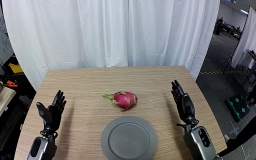
视觉工具实际返回图片 2
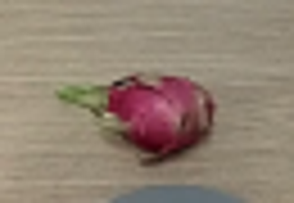
视觉工具实际返回图片 3
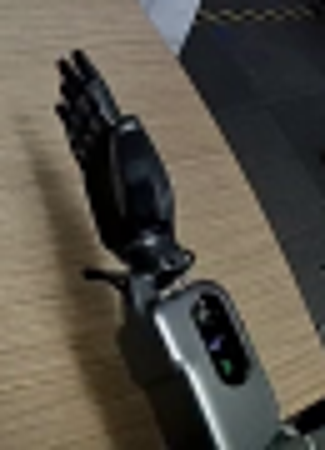
视觉工具实际返回图片 4
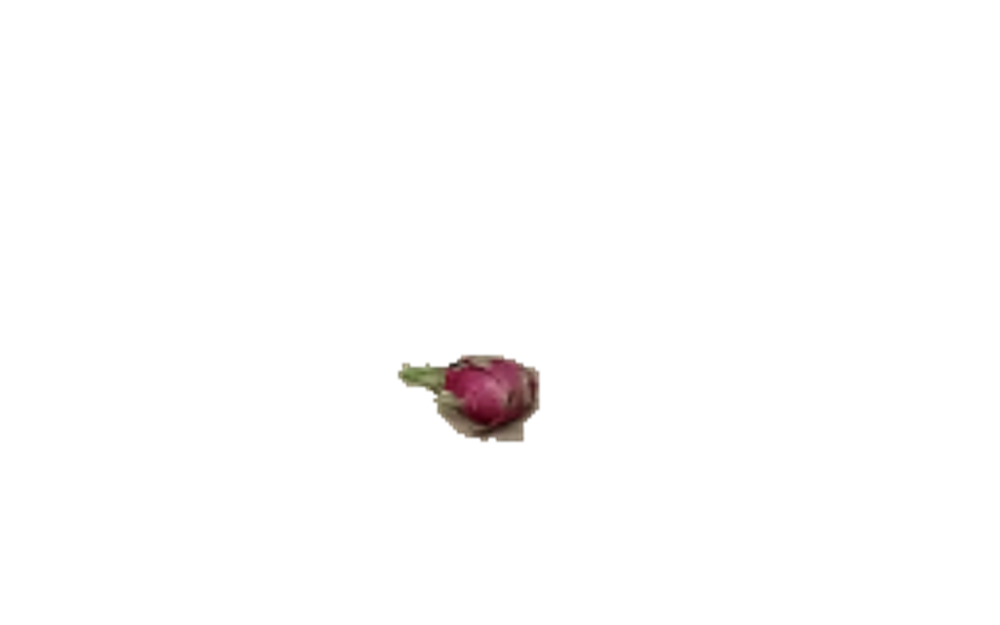
视觉工具实际返回图片 5

视觉工具实际返回图片 6
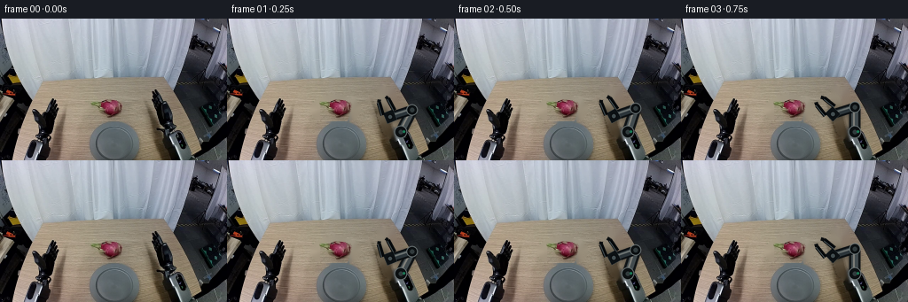
视觉工具实际返回图片 7
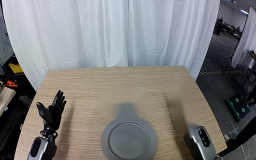
视觉工具实际返回图片 8
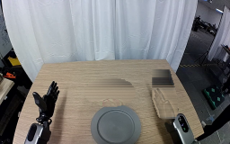
视觉工具实际返回图片 9
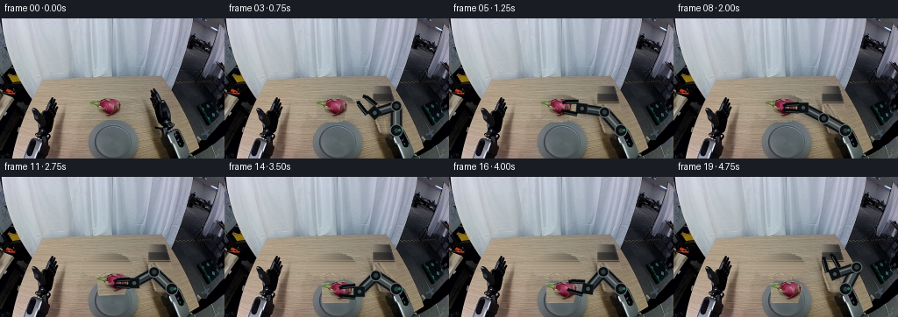
视觉工具实际返回图片 10
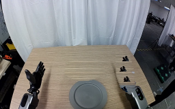
视觉工具实际返回图片 11

视觉工具实际返回图片 12
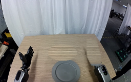
视觉工具实际返回图片 13

保存候选 5 份；完成命令 12 次；可验证图片返回 13 张。原始 API 响应与完整日志保留在本地。